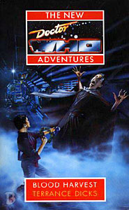

|
Blood Harvest
|
BASIC PLOT DOCTOR Pg 1 The fourth Doctor makes a cameo. COMPANIONS Pg 1 K9 makes a cameo. MATERIALISATION CIRCUIT Pg 240 The TARDIS dematerializes from Doc's Place in Chicago, where, presumably, it had materialized before the events of the book began. Pg 244 The TARDIS materializes in exactly the same woodland clearing on the unnamed State of Decay planet as it did last time. Pg 257 Gallifrey, right in the centre of the Capitol Pg 283 The TARDIS has returned to Doc's Place in Chicago PREPARATORY READING CONTINUITY REFERENCES "'Computations completed, Master! Using information from the Hydrax data banks I have computed an infallible method of entering and leaving E-space at will'" - The Hydrax was the ship from State of Decay (a work I fear I will be referencing a lot). Also interesting to note how cruel the Doctor was in Earthshock when Adric expressed a wish to return home and the Doctor failed to mention that he had an infallible method of getting there. Also note that the 8th Doctor does go there 'infallibly' during The Eight Doctors. Also see continuity cock-ups. "'Biroc...Tharils...'" - Warrior's Gate. Pg 2 "The hidden control room, deep in the heart of the Capitol" is, of course, the one Borusa used in The Five Doctors. "'Borusa lives!' All three chanted the third, blasphemous line: 'Rassilon must die!'" - This hysterically funny moment brings back fond memories of Cardinal, later President Borusa (a man who uses up regenerations even faster than the Master did) from The Deadly Assassin, The Invasion of Time, Arc of Infinity and The Five Doctors amidst numerous references in the NAs. It also reminds us of Rassilon and his many accoutrements, also first mentioned in The Deadly Assassin and who appears in The Five Doctors and then is later referenced more times than I care to remember in every incarnation of the books. Pg 3 "But down these mean streets a man must go who is not himself mean, who is neither tarnished nor afraid... He is the hero, he is everything... He must be the best man in his world and a good enough man for any world." This quote from Raymond Chandler is rather beautifully reprised in Mean Streets in the mind of one of the characters (on Pg 72, if you must know). It also is a retrospective mis-quote of Uncle Terrance's oft-quoted phrase that defines his opinion of the Doctor's character. You know the one I mean: "He is never cruel or cowardly" etc. Pg 14 Capone tells Dekker that the Doctor is going by the alias of Doctor John Smith. As I'm certain you all know, this alias has been used by the Doctor endlessly, appearing for the first time in The Wheel in Space. Pg 20 "'I make it in the bath-tub - well, swimming bath actually'" The TARDIS swimming-pool was seen in The Invasion of Time, was jettisoned from the TARDIS as it was leaking some time before Paradise Towers, and, presumably, a new one has been constructed which has been referenced numerous times in the books since. Pg 25 It seems unlikely, but it's possible that the ever-burning cigarette that the Doctor never takes a drag on (and the image of the Doctor smoking, as he would do later in Halflife, is still a very weird one) is related to the Everlasting Matches from Doctor Who in an exciting adventure with the Daleks, also mentioned many times since in various books. But it does seem unlikely. Pg 32 Bernice drinks Eridanian Brandy, as mentioned in Deceit (pg 100). I don't recall the Doctor ever mentioning this particular planet. (It's a real star system, but the Eridani pop up later in Blue Box.) Bernice is sitting in the same Tavern from State of Decay and meets Ivo, also from said story. Pg 33 "'Things were very different once,' said Ivo. 'In the time of the Lords...'" State of Decay. Ivo goes on to give us a neat summary of that story Pg 36 "'Be sure to return before dark - before the bats start to fly'" Stunningly unrealistic plastic bats were also a feature in the filming of State of Decay. The ritual ears, eyes and mouth gesture (based, presumably on 'Hear no evil, See no evil, Speak no evil' was also a staple of that same story. Pg 37 - "The turrets were set close together, giving an oddly lopsided look, as if a third turret was needed to complete the design." The third turret, of course, was used to stake The Great One through the heart long ago, in State of Decay. "All her archaeologist's instincts aroused, Bernice headed for the Tower." Is there anyone out there who didn't know Bernice was an archaeologist? Thought not. Pg 38 - "The Tower had no windows" as it was populated by vampires. Also established in State of Decay. Pg 39 - We're treated to a quick revisit to Zargo and Camilla's throne-room, although a number of the details are wrong (see Continuity Cock-Ups) Bernice then tours the sets of State of Decay in this and the following pages, including the scout-ships, the fuel-cells down at the bottom where all the bodies were kept and the inner sanctum. Pg 41 is practically a reprise of the cliff-hanger from Episode 2 of State of Decay. Pg 44 Bernice digs up The Great One, who died at the end of State of Decay. That said, the positioning of the Scout Ship is wrong, but it may have sunk into the ground in the time since then. Pg 45 "'It's not always a good idea, you know, digging up the past.'" One is tempted to note that Uncle Terrance has never seemed to have a problem with this. Oh, and this is Romana, by the way. From The Ribos Operation to Warrior's Gate. But you knew that. Pg 47 is practically a reprise of the cliff-hanger from Episode 1 of State of Decay, including, incredibly, the sudden and unexplained disappearance of the bats. The only major difference is that it's Ivo that immediately appears on the scene. Pg 48 Zargo, Camilla and Aukon. All from State of Decay. Pg 49 "The Doctor always said sleep was for tortoises." He said the same thing to Litefoot in The Talons of Weng-Chiang. Pg 49 It's not Doctor Who, but it should be mentioned that a pianist called Sam is a very clear nod to Casablanca. Pg 50 Ace refers to her 'training'. This mostly occurred during the time she was separated from the Doctor between Love and War and Deceit. Pg 71 Ivo thinks of Marta, his wife, a woman who is surely remembered best for saying that "Resistance is useless" during State of Decay. Pg 73 Bernice remembers the Doctor quoting his old friend Winnie, who is, it is clear to us, Winston Churchill. The Doctor met him in Players. Pg 74 The image of the villagers all going to attack the tower, each of them carrying blazing torches is so magnificently derivative of any Hammer movie you could hope to see, that I thought it worth mentioning. Oh, and see also The Brain of Morbius. Pgs. 85-86 Ivo calls Kalmar on the communicator exactly as he did in Episode 1 of State of Decay. Kalmar is still alive?! Good God. This can't be more than, what, 20 years after State of Decay? Pg 87 "She began thinking about the ideal restaurant for the occasion, and was hesitating between Maxim's in nineteenth century Paris and a fish-bar on Metebelis Three." Perhaps in nineteenth century Paris, she could look up the future Ace, and Metebelis Three, of course, appeared in The Green Death and Planet of the Spiders. Pg 93 Bernice's tick-box of 'sets from State of Decay' is finally complete: she has arrived at the rebel stronghold. Pg 95 More State of Decay reminiscence. And Tarak is the son of Tarak, who died in the assault on the Tower. Pg 98 Bernice's qualifications or lack thereof were first introduced in Love and War (as was she) and finally get resolved in The Dying Days. Pg 103 "'Not like that Nazi-occupied Britain business.'" Timewyrm: Exodus. Pg 117 "'It's a crazy scheme,' said the Doctor, 'But you never know, it just might work'" sounds suspiciously like a deliberate quoting of Terry Pratchett's 'It's a million to one chance...' sequences. Pgs. 134-135 Romana gives Bernice a quick summary of State of Decay. Pg 135 She follows this with an even quicker summary of Warrior's Gate, and then explains a little more of her backstory post Warrior's Gate. Pg 143 "'The Draconians had hundreds of years of warfare, terror, murder, bloodshed...'" Frontier in Space, and occasional book appearances. "'On Dulkis...'" The Dominators. Who have not appeared again. Pg 144 "'It's the first thing the Doctor and I noticed when we came here,' said Romana. 'In terms of applied socio-energetics, the society had simply lost its grip on level-two development. It actually seemed to be evolving backwards, clearly as the result of some exceptionally powerful force.'" This is nearly word for word what Romana says in Episode 2 of State of Decay. Pg 167 "'Well, I've travelled a great deal but I'm originally from a place called Gallifrey.' 'Sure, I know it well!' 'You do?' 'A little town in Ireland, not too far from Dublin.'" The running joke about Gallifrey being in Ireland appeared in a number of the Graham Williams 4th Doctor stories, including The Invisible Enemy, amongst others. Also, the amnesiac 8th Doctor has a vague feeling that he came from Ireland in Mad Dogs and Englishmen. Pg 168 "Glitz would have been proud of him." Glitz appeared in The Trial of a Time Lord and Dragonfire. Pg 169 "The Doctor whisked the files from Thompson's hands and returned to his chair. He flicked through them with apparent carelessness, taking in every word and committing the files to memory." The Doctor's ability to speed-read here reflects the 'Bit boring in the middle' sequence in City of Death. Pgs 189-190 Ace is captured and is about to be raped. It's not continuity as such, but it is tempting to suggest that an attempted rape appears in many of Terrance's books as a method of making them more adult. Practically the same thing happens to Peri in Players, for example. Pg 199 "'Lord Zargo,' he whispered fearfully. 'Lady Camilla and Lord Aukon. The Three Who Rule.'" From State of Decay, obviously. Pg 201 Romana, to the Three Who Rule: "'Go away, you're dead. You're just piles of dust. I saw you die!'" In the closing moments of State of Decay. Pg 207 Sargon's history lesson includes the arrival of the Great Vampire, as spoken of in State of Decay and mentioned in some of the Gallifreyan historical novels including Lungbarrow and The Infinity Doctors. Pgs. 209-210 Romana continues to natter on about how the Time Lords defeated the Vampires, but one escaped. Pgs. 210-211 Romana and Sargon carry on into a summary of State of Decay, albeit with all the alterations in continuity that have had to be inserted in order to make Blood Harvest work. Pg 213 "'I had an instructor at Military Academy who used to say "Really!" in that tone. That's why I ran away.'" Bernice's history at the Military Academy and afterwards was originally related in Love and War. Pg 218 Agonal, the Doctor explains, is one of the Elementals, "'spiritual in essence, but with the power to interact with the physical world.'" Other elementals we have come across over the New Adventures include Death (Timewyrm: Revelation, amongst others) and Time. Pg 230 "But was there another game behind the game? A voice inside his head whispered, 'To lose is to win, and he who wins shall lose.'" This is the legend written on the monument inside Borusa's tomb on Gallifrey. Pg 236 "The Doctor said something coarse in Old Low Gallifreyan." Presumably the opposite language to Old High Gallifreyan, which the above legend was written in. Pg 238 "'You're Doc McCoy, wanted for bank robbery in three states.'" Presumably the man that the Doctor is mistaken for is an ancestor or relative of the British actor, Sylvester, given their facial similarities. Pg 240 "'What sort of a sound?' 'It's hard to describe, Captain. It was kind of, I dunno, a sort of wheezing, groaning sound.' 'Get away with you,' said Reilly in frustration. 'Wheezing and groaning... What kind of an eejit would make up a description like that?'" If you think I'm going to list every single Terrance Dicks Target novelisation that describes that TARDIS dematerializing as a 'wheezing, groaning sound,' then you are much mistaken. Still, this line does raise a smile. Pg 241 The chapter title is "Escape to Danger" which was also the title of Episode 3 of The Web Planet. This is probably a coincidence. Pg 245 "'I do believe we've landed in the very same spot,' said the Doctor delightedly. 'Even though she hasn't actually ever been here before.'" The same spot as in State of Decay, and the TARDIS hasn't actually been here before because this is the Third Doctor's TARDIS from the Alternative Earth in Blood Heat. But see Continuity Cock-Ups. Pg 246 "'Don't you remember the night we took the Tower? And the way you were rude to K-9 and I made you apologise?'" The Doctor refers, once again, to State of Decay episode 4. Pg 252 "A pyramid of blankness appeared in the laboratory. Spinning over and over, it engulfed Agonal and whisked him away... 'Timescooped!' [the Doctor] yelled." It's the Timescoop from The Five Doctors, albeit the original version of The Five Doctors, not the later re-edit. Had it been, Agonal would have been scooped by a transparent ice-cream cone effect. Pg 256 "The Doctor and Romana were standing face to face, arms outstretched, fingertips resting lightly on each other's temples." Time Lord telepathic communication in this way was seen first in The Three Doctors. "'So the Tharils are all free?'" Warrior's Gate Pg 257 "Since it was undoubtedly a Time Lord craft, and it was transmitting an emergency distress signal the transduction barriers were lowered and it was allowed to land." The transduction barriers, one of Gallifrey's main defences, were first discussed in The Invasion of Time Pg 258 "'At one time or another he's been a wandering fugitive, a suspected traitor and assassin, and Lord President of Gallifrey.'" Respectively, The War Games, The Deadly Assassin and The Invasion of Time. Pg 259 "'My old Reichsinspektor General badge.'" Timewyrm: Exodus. Pg 260 "'Word of a Prydonian?'" The Prydonians, along with the other Colleges of Gallifrey's ruling elite were introduced in The Deadly Assassin "The elaborate red, white and gold uniforms of the Chancellery Guard had a reassuringly comic opera look about them." The uniforms were first modeled in Arc of Infinity, by Colin Baker amongst others. Whilst one can't help agreeing with Terrance, it is amusing to see his little dig at 1980s costuming policies for the programme. "These hard-faced troopers reminded Ace of the SS." Whom she met in Timewyrm: Exodus. Pg 261 To Romana: "'We know who you are,' said Zorell. 'You defied an order to return to Gallifrey, did you not?'" She did this in Warrior's Gate, although the order came in Full Circle. To Benny: "'Omega knows. You look like one of those Shobogan bitches to me.'" Omega is... Do I really need to tell you who Omega is? The Shobogans were mentioned in The Deadly Assassin and appeared in The Invasion of Time. Since then they've popped up in the novels on occasion. Pg 262 The TARDIS food dispenser First appeared in The Daleks, was rarely mentioned thereafter and has made a grand re-entry, like an aging pop-star, in many books since. "Romana went over to the wallscreen and switched it on. It was showing a Public Record Video programme, the ceremonial inauguration of President Flavia." The Public Record Video, and their rather obsequious reporters, were first seen in The Deadly Assassin. Flavia appeared in The Five Doctors, where she was made Acting President for a long time. She also appeared in The Eight Doctors, which makes clear that she stopped being President sometime after The Five Doctors and before Trial of a Time Lord, whereafter she became President again. Pg 264 "'This next bit is best viewed from behind the sofa.'" Ha ha, very funny. Behind the sofa is, of course, the finest location from which to watch an episode of Doctor Who. Pg 265 After the early mention of the Prydonians, the other Gallifreyan Colleges, the Arcalians and the Patrexes are mentioned. (See also Continuity errors) Rath is the brother of Chancellor Goth. The Deadly Assassin. Pg 266 The Doctor refers to the cover story established by Borusa regarding Goth's part in the Master's plan from the end of The Deadly Assassin. Pg 267 "'Oh no,' said the Doctor wearily. 'Not the mind-probe!' Probably one of the most repeated lines by fans anywhere, it was first uttered in glorious overstatement by the Castellan in The Five Doctors. Pg 270 Castellan Spandrell pops up, from The Deadly Assassin. This would seem to contradict established continuity (a different Castellan in Arc of Infinity and The Five Doctors, for example) but in Lungbarrow it is mentioned that Castellan Spandrell retired twice and has come out of retirement twice. Pg 271 The Doctor drinks the Elixir of Life, seen in The Brain of Morbius. Pg 274 "'When Borusa became Lord President.'" After the events of The Invasion of Time. Pg 275 The harp and picture from The Five Doctors which turn into the top secret Timescoop door opening mechanism once again appear. Rather gloriously, the ballad is given a name: Rassilon's Lament. This is fantastic! It implies that, not only could you stumble on the door by playing the piece of music immediately in front of you, but you could do it by playing an ancient folk song without even knowing it was in front of you. Kind of like using Greensleeves to open a secret door in one of Henry VIII's palaces, or The Star-Spangled Banner to open a secret door in the White House. Pgs. 275-276 The Game Room from The Five Doctors is revisited and described in all its glory. Pg 276 A Drashig, from Carnival of Monsters appears, for no easily discernible reason. Note that the same monster is Timescooped by completely different parties in The Eight Doctors. Perhaps this is clever foreshadowing. Pg 277 A description of the Tomb of Rassilon includes the Doctor telling Romana that "'The one in the centre is Borusa. I helped to put him there.'" This occurred in The Five Doctors. Pg 279 "Borusa - the old Borusa, with all his strength and wisdom." This seems to be a deliberate slight at Eric Saward, who changed the villain in The Five Doctors from The Master, which is what Dicks had intended, to Borusa, which had never been Dicks' intent. So now, Terrance is releasing Borusa from a prison which he had never put him in. Of course, that's nowhere near as exciting as Robert Holmes' plan as to who was operating the Time Scoop. "'I am ready to resume my place, Lord Rassilon.'" Borusa's decision to return to his entrapment gives us an escape from potentially disastrous continuity problems later caused by The Eight Doctors. In that, also, Borusa is released from his prison, for a different reason and much earlier in the time stream. This line implies that, back then (during The Trial of a Time Lord), once everything had stabilized, Borusa voluntarily returned to Rassilon's tomb, as he was prepared to do this time. Maybe, between this occasion and The Eight Doctors, Borusa has achieved redemption and can now Shanshu. Oh no, wait, am I watching the right programme? Pg 280 Again, it's a bit extreme, but the idea of Rassilon actually being dead and still mentally pretty much aware and organized is one that is in perfect alignment with the behaviour of the Doctor's body in "'I think I'll stay for a while, Doctor, and resume my studies. I'm a Gallifrey girl at heart, you know.'" At this point Romana begins a journey which will see her becoming Lord President (by Happy Endings, if not before), kidnapped for 20 years (The Apocalypse Element audio adventure), send the Doctor into a completely different universe (audio adventure Zagreus), become involved in all sorts of political Shenanigans (The Gallifrey series of audios), regenerate (The Shadows of Avalon), be replaced by a man in an alternative timeline (The Taking of Planet 5), maliciously create the circumstances that would create the living TARDIS, Compassion (The Shadows of Avalon) and eventually be involved in the events which lead to the destruction of Gallifrey (The Ancestor Cell). In retrospect, she probably should have stayed in E-Space.
Pg 281 "'Your friend is as good as new - rather better in fact. We took the liberty of making a few minor improvements.'" Let us hope these are not the same sort of improvements that the Time Lords gave to Chris Cwej as revealed in Dead Romance.
Pg 282 Romana meets Ruath, setting up the plot for Goth Opera. But see Continuity Cock-Ups.
Pg 286 Yarven, the vampire, escapes on Earth in 1930, again setting up the plot for Goth Opera. It would be lovely to think that this also set up the plot of Vampire Science, but since one of the vampires in that remembers the Aztecs (the era, not the Doctor Who story), it doesn't fit together. But at least Goth Opera is signposted.
Pg 287 "'Don't worry, Bernice,' said the Doctor. 'I took care of it ages ago.'" In Goth Opera.
OLD FRIENDS AND OLD ENEMIES Flavia, Spandrell.
NEW FRIENDS AND NEW ENEMIES In Chicago: Al Capone, Frank Rio, various Chicago mobsters (all real-life
characters).
On the Vampire Planet: Varis, Tarak (son of Tarak), Veran, Yarven. The latter will appear in Goth Opera.
In general: Agonal, an elemental force with a taste for violence (sometimes
disguised as Sargon, a vampire Lord).
On Gallifrey: The Chief Hospitaler (whom the Doctor has already met), The
Council of Three (Rath, Elar and Morin), Zorell. Ruath, who will go on to appear in CONTINUITY COCK-UPS PLUGGING THE HOLES [Fan-wank theorizing of how to fix continuity cock-ups] FEATURED ALIEN RACES Vampires (who can now fly, amongst other things).
FEATURED LOCATIONS Pg 2 Beneath the Capitol, in the TimeScoop control room on Gallifrey but
only ever in Italics until Pg 257.
Pg 5 Chicago, 1929.
Pg 32 An Unnamed planet in E-Space, formerly home to The Great One,
probably about 20 years after the events of State of Decay.
Pgs. 216-217 Ace witnesses, in quick succession, the Spanish Inquisition,
The Terror in France, The Charge of the Light Brigade in Crimea, and a
section of trench during the First World War.
Pg 257 Gallifrey, the Capitol and later the Tomb of Rassilon.
IN SUMMARY - Anthony Wilson |
|
 |